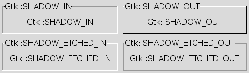

Used to change the appearance of an outline typically provided by a GtkFrame or a GtkScrolledWindow. GtkArrows also use the shadow type.

Value | Symbolic name | Description |
| 0 | Gtk::SHADOW_NONE | No outline. |
| 1 | Gtk::SHADOW_IN | The outline is bevelled inwards. |
| 2 | Gtk::SHADOW_OUT | The outline is bevelled outwards like a button. |
| 3 | Gtk::SHADOW_ETCHED_IN | The outline itself is an inward bevel, but the frame does. |
| 4 | Gtk::SHADOW_ETCHED_OUT |